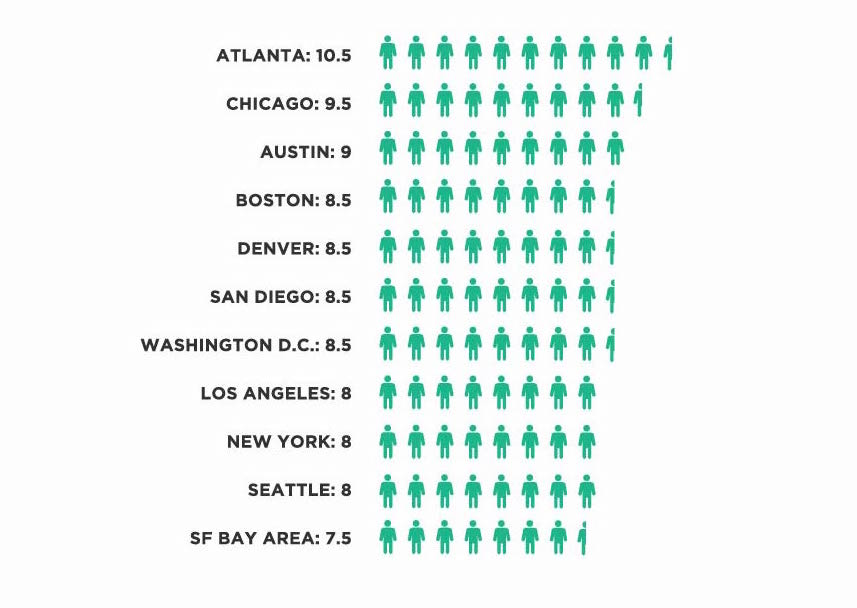

Hired, the company on a mission to get everyone a job they love, has tapped into its data to reveal insights on software engineers’ salaries and the hiring market more generally. Because Hired facilitates the job searching process from the initial interview request all the way to the final job offer, we have unprecedented visibility into salaries across a variety of positions and companies. Most of the tools available to companies and job seekers are flawed and inaccurate. Salary calculators don’t account for company size, years of candidate experience or location, while many job sites are based on anonymous, self-reported data which can vary widely in accuracy. Hired’s data, on the other hand, is based on actual job offers made to real people.
Our inaugural State of Salaries report is part of a larger effort to bring more transparency to the hiring process. We want to empower candidates to understand their market value based on their skills and experience so that they can approach the job searching process armed with information. We also want to help companies recruit and hire with insight. We believe this transparency benefits everyone, so that individuals can find jobs they love and companies can attract the individuals who will drive their businesses forward.
WHERE DOES YOUR SOFTWARE ENGINEERING PAYCHECK GO THE FURTHEST?
San Francisco is infamous for high salaries and even higher rents. While San Francisco salaries are huge - $132K on average for software engineers - adjusting for cost of living paints a different picture. We used a standardized cost of living calculator to show how average salaries in each city would compare to San Francisco.
For example, an engineer in Austin making $110,000 would need to make $195,000 in San Francisco to maintain the same quality of life.
While it’s easy for job seekers to get stars in their eyes over the salaries in San Francisco, when you adjust for cost of living, an engineer’s salary goes further in every city in our analysis with the exception of New York.
STARTING A CAREER? DO IT IN SAN FRANCISCO.
Forgetting cost-of-living adjustments for a moment, our data indicates that there are advantages to starting your career in San Francisco. Candidates leaving the Bay Area command higher offers than candidates from any other city in our analysis.
Bottom line: No matter where you want to work, engineers that start their careers in San Francisco have a higher earning potential once they move to other job markets.
STARTING A NEW OFFICE? THESE CITIES GIVE YOU THE MOST ENGINEERING BANG FOR YOUR BUCK:
While job seekers are particularly interested in their potential salaries, employers can use average salary data to scale their teams. If you’ve got a $1M annual engineering budget, you can hire approximately 10 engineers in Atlanta, compared to 9 in Boston or just 8 in San Francisco.
